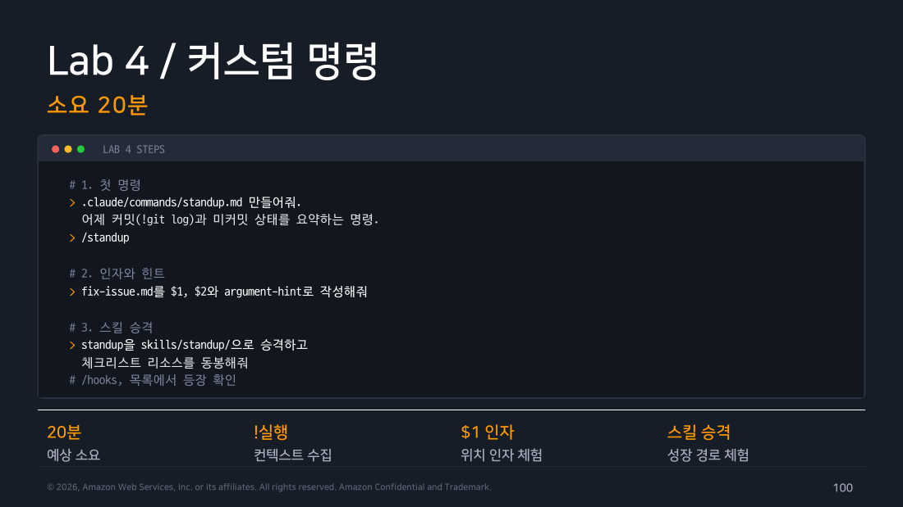
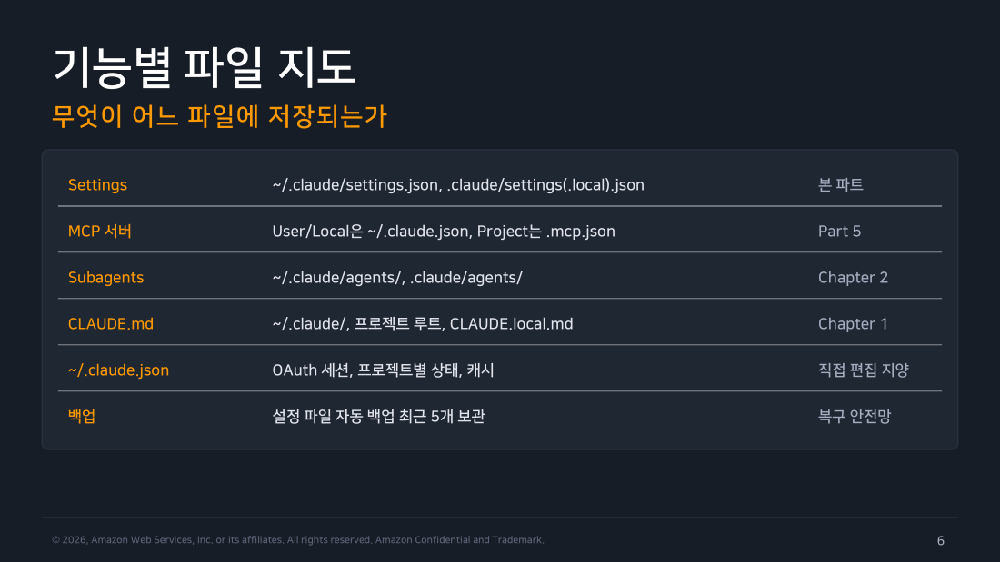
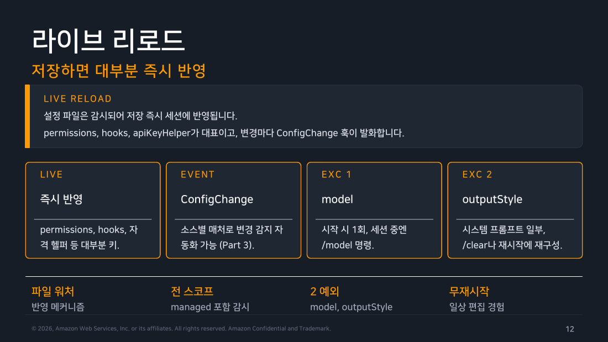

Part 1 — Settings 체계¶
한 줄 요약¶
Claude Code는 스코프가 다른 여러 설정 파일을 겹쳐 적용합니다. 값이 하나인 키와 목록형 키(특히 권한 규칙)는 충돌을 처리하는 방식이 다릅니다.
왜 알아야 하나¶
2주차에서는 서브에이전트의 도구 권한이 어디서 오는지, 3주차에서는 조직이 managed settings로 무엇을 강제할 수 있는지 다뤘습니다. 이번에는 개인 개발자가 손대는 설정 파일의 종류와, 같은 키를 여러 파일에 다르게 넣었을 때의 동작을 살펴봅니다. 이 구조를 모르면 팀 표준과 로컬 동작이 다른 이유나, 여러 파일 중 일부 값만 반영된 이유를 찾기 어렵습니다.
1. 먼저 분리하기 — 저장되는 설정 파일과 이번 실행의 CLI 인자¶
먼저 무엇이 디스크에 남는지 구분합니다. 설정 파일은 네 스코프(Managed/User/Project/Local)에 저장됩니다. CLI 인자는 파일이 아니라 이번 실행에만 적용하는 입력입니다. 따라서 “설정 파일 다섯 개”가 아니라 저장 설정 4계층 + 세션 한정 CLI 인자로 보는 편이 정확합니다.
- Managed — 서버 관리형 배포, macOS의 plist나 Windows 레지스트리, 또는 시스템 설정 파일. 조직 전체에 적용되며 3주차에서 이미 다뤘습니다.
- User —
~/.claude/settings.json. 내 모든 프로젝트에 공통으로 적용되고 다른 사람과 공유되지 않습니다. 개인 취향(테마, 알림 방식 등)을 넣기 적합합니다. - Project —
.claude/settings.json. 저장소에 커밋되어 협업자 전원에게 공유됩니다. 팀 표준을 넣는 곳입니다. - Local —
.claude/settings.local.json. 같은 저장소 안에서 나만 쓰는 설정이고 관례상.gitignore에 넣어 커밋하지 않습니다. 실험이나 개인 예외를 여기 둡니다.
이번 실행만 바꿀 때는 CLI 인자(claude --settings로 넘긴 값이나 개별 플래그)를 씁니다. 저장되는 네 계층과 CLI 인자를 함께 평가한 우선순위는 Managed → CLI 인자 → Local → Project → User이며 앞쪽이 이깁니다. 공식문서(code.claude.com/docs/en/settings)의 스코프 우선순위 설명도 정확히 이 순서를 명시해 교재와 공식문서가 일치합니다.
flowchart TD
Q["같은 키가 여러 파일에 있다"]
Q --> M["Managed<br/>서버 배포·plist·레지스트리"]
M -->|"아무도 못 덮음"| C["CLI 인자<br/>claude --settings, 세션 한정"]
C --> L["Local<br/>.claude/settings.local.json"]
L --> P["Project<br/>.claude/settings.json"]
P --> U["User<br/>~/.claude/settings.json"]
U -->|"아무도 안 정했을 때"| D["내장 기본값"]
style Q fill:#673ab7,stroke:#4527a0,stroke-width:3px,color:#fff
style M fill:#ffebee,stroke:#c62828,color:#000
style C fill:#e3f2fd,stroke:#1976d2,color:#000
style L fill:#e8f5e9,stroke:#388e3c,color:#000
style P fill:#e8f5e9,stroke:#388e3c,color:#000
style U fill:#e8f5e9,stroke:#388e3c,color:#000
style D fill:#f5f5f5,stroke:#616161,color:#000
▲ 교재 슬라이드 4 — 설정 스코프 4계층
2. 함정 하나 — 이 우선순위가 안 통하는 키가 있다¶
앞의 우선순위는 defaultMode처럼 값이 하나뿐인 키에 적용됩니다. permissions.allow나 deny처럼 목록(배열)으로 된 키는 다르게 동작합니다.
User 설정 파일: { "permissions": { "allow": ["mkdir"] } }
Project 설정 파일: { "permissions": { "allow": ["touch"] } }
Project 파일에는 mkdir 규칙이 없습니다. 그래도 mkdir 폴더명은 실행됩니다. 두 목록을 이어 붙이면 최종 값이 ["mkdir", "touch"]가 되고, Claude Code는 이 합쳐진 목록으로 판단하기 때문입니다.
값을 하나만 담는 키는 상위 스코프의 값이 있으면 하위 값을 무시합니다. 권한 규칙을 포함한 목록 키는 원칙적으로 모든 스코프의 값을 합칩니다. 공식문서는 이를 "Lists merge instead of overriding" 절에서 설명합니다. 단, fallbackModel, modelPicker, managed availableModels, modelSettings는 이 일반 병합 규칙의 예외이므로 모델 관련 설정은 레퍼런스를 따로 확인해야 합니다.
defaultMode처럼 한 가지 답만 필요한 값은 상위 스코프가 이기는 편이 자연스럽습니다. 권한 규칙은 여러 주체가 서로 다른 이유로 항목을 추가합니다. User 스코프에서 모든 프로젝트의 mkdir을 허용했는데 Project 스코프에 들어갈 때마다 그 규칙이 사라진다면 매번 다시 허용해야 합니다.
회사에서 managed 설정으로 위험한 명령을 deny한 경우도 마찬가지입니다. Project 설정이 해당 규칙을 언급하지 않았다는 이유만으로 managed deny를 덮어쓴다면 회사의 안전장치가 사라집니다. 권한 규칙은 한 스코프가 다른 스코프를 이기는 대신 각 단계에서 추가한 규칙을 모두 쌓는 방식으로 동작합니다.
Note
같은 명령이 allow와 deny에 모두 들어 있으면 deny가 이깁니다. 목록 병합과 별개로, deny에 걸린 호출은 allow 규칙이 있어도 막힙니다. 평가 순서는 Part 2에서 다룹니다.
병합 규칙은 아래 직접 해보기에서 실제로 확인했습니다.
3. 이 문서에 없는 것들 — 설정만 이 규칙을 따르는 건 아니다¶
스코프 4계층과 우선순위 5단은 Settings 자체(~/.claude/settings.json, .claude/settings(.local).json)에 적용됩니다. Claude Code의 다른 구성 요소는 저장 위치가 다릅니다.
- MCP 서버 — User/Local 스코프는
~/.claude.json에, Project 스코프는 저장소 루트의.mcp.json에 따로 저장됩니다(Part 5에서 다룸). - Subagents —
~/.claude/agents/와.claude/agents/에 저장되며, 2주차에서 이미 다룬 내용입니다. - CLAUDE.md —
~/.claude/, 프로젝트 루트,CLAUDE.local.md세 곳에 나뉘어 있고 1주차에서 다뤘습니다. ~/.claude.json— OAuth 세션·프로젝트별 상태·캐시가 들어 있는 파일로, 직접 편집은 권장되지 않습니다. Lab 1에서 워크스페이스 신뢰(trust) 상태를 확인하려고 이 파일을 들여다봤는데, 실제로 각 프로젝트 경로별hasTrustDialogAccepted값이 여기 저장돼 있었습니다.- 백업 — 설정 파일은 최근 5개까지 자동 백업되어 복구 안전망 역할을 합니다.

▲ 교재 슬라이드 6 — 기능별 파일 지도
4. 설정을 고치면 언제 반영되는가¶
settings.json에는 $schema(에디터 자동완성용), permissions(Part 2 주제), env(환경변수 배포), companyAnnouncements(시작 배너)처럼 성격이 다른 키가 함께 들어갑니다. 대부분은 저장하는 순간 바로 반영되므로 세션을 다시 시작할 필요가 없습니다. 파일 시스템 워처가 설정 파일을 감시하며, 변경 사항이 세션에 반영될 때 ConfigChange 훅(Part 3)이 발화합니다.
현행 문서는 세션 시작에 읽는 일부 키의 예로 model, effortLevel, modelSettings를 듭니다. 이 키들은 중간 파일 수정만으로 반영되지 않을 수 있으므로, 정확한 대상과 전환 방법은 settings reference를 확인합니다. outputStyle의 리로드 동작은 이 실습 교재의 기록과 현행 문서가 일치하지 않으므로 일반 규칙으로 삼지 않습니다.

▲ 교재 슬라이드 12 — 라이브 리로드
v2.1.239 교재·실측과 현행 공식 목록을 구분한다
v2.1.239 교재·실측: permissions, hooks, 환경변수는 도구를 호출할 때 확인할 수 있어 변경 사항을 다시 읽어도 문제가 없습니다. 반면 model은 세션이 시작될 때부터 대화 맥락에 영향을 주고, outputStyle은 시작할 때 시스템 프롬프트에 들어갑니다. 중간에 파일만 바꾸면 이미 쌓인 맥락과 어긋날 수 있어 명시적인 전환 명령이 필요합니다.
현행 공식 문서: 세션 시작에 읽는 일부 키의 예로 model·effortLevel·modelSettings를 듭니다. 이 목록과 위 outputStyle 기록을 같은 계약으로 일반화하지 말고, 설정이 바로 반영되지 않으면 실제 대상과 전환 방법을 settings reference에서 확인합니다.
5. 키 카탈로그 — 전체가 아니라 감을 잡는 정도로¶
교재는 키를 "모델과 사고"(alwaysThinkingEnabled, availableModels, model 등), "운영"(autoUpdatesChannel, autoCompactEnabled, cleanupPeriodDays 등), "끄기 스위치"(disableAllHooks, disableAutoMode, disableSideloadFlags 등 disable 패밀리)로 묶어 소개합니다. 전체 키가 100개를 훌쩍 넘으므로 이 문서에서 모두 나열하지 않습니다. 필요한 키는 공식 레퍼런스(code.claude.com/docs/en/settings-reference)에서 그때그때 확인하는 편이 낫습니다.
6. managed-settings.d 드롭인 — 회사 정책을 조각내는 법¶
3주차에서는 managed settings가 조직 전체에 적용되는 최상위 계층임을 다뤘습니다. 여기서는 그 계층 내부의 운영 방식을 하나 더 살펴봅니다.
회사 정책 파일을 여러 팀이 나눠 운영할 때 드롭인 구조를 쓰는 관례가 있습니다. 다만 현행 Claude Code 공식 문서는 managed source와 무효 항목의 결과를 설명할 뿐, managed-settings.d/의 파일명 정렬·깊은 병합·관용 파싱 전체 계약은 확인해 주지 않습니다.
managed-settings.json # 기본판
managed-settings.d/
10-telemetry.json # 관측팀 조각
20-security.json # 보안팀 조각
아래는 교재/운영 관례의 예시이며, Claude Code의 이식 가능한 공식 계약으로 사용하면 안 됩니다.
10-telemetry.json: { "logLevel": "info" }
20-security.json: { "logLevel": "debug" }
→ 최종 결과: "logLevel": "debug" (숫자가 늦은 파일이 앞선 파일을 덮음)
목록(배열) 키는 다릅니다.
10-telemetry.json: { "allowedHosts": ["metrics.corp.com"] }
20-security.json: { "allowedHosts": ["audit.corp.com"] }
→ 최종 결과: "allowedHosts": ["metrics.corp.com", "audit.corp.com"] (이어붙임)
객체의 깊은 병합 등 세부 동작도 이 예시의 운영 관례로만 읽습니다. 실제 배포에서는 사용하는 Claude Code 버전의 managed settings 문서와 배포 도구의 계약을 검증해야 합니다.
2절의 병합과 헷갈리지 마세요
방금 본 규칙은 managed 계층 내부에서 조각 파일들끼리 합치는 규칙이고 2절에서 본 "User/Project/Local 사이의 배열 병합"은 서로 다른 스코프 사이의 규칙입니다. 이름은 비슷해 보여도 완전히 별개의 메커니즘입니다.
managed 설정의 무효 항목 처리 결과는 공식 문서에서 확인할 수 있지만, 조각 파일의 관용 파싱·fail-closed·깊은 병합까지를 하나의 고정 계약으로 단정하면 안 됩니다. 운영 배포 전에는 실제 managed source와 무효 설정의 결과를 검증합니다. User/Project/Local 설정에는 $schema를 넣어 편집 단계에서 오타를 줄이는 편이 안전합니다.
인프라 관점
이 단일 값/배열/객체 병합 규칙은 Ansible의 group_vars/host_vars 계층이나 Kustomize의 overlay 병합과 정확히 같은 고민을 풉니다. 여러 팀이 같은 정책 파일을 동시에 건드리지 못하게 조각내면서도 합쳤을 때 예측 가능한 결과를 보장해야 하는 문제입니다. GPO(그룹 정책 개체)를 여러 OU에 나눠 적용해본 경험이 있다면 "나중 파일이 값을 덮는다"는 규칙이 낯설지 않을 것입니다.
7. /config — 설정의 대화형 창구¶
/config는 탭 형태의 설정 UI를 엽니다. /config verbose=true처럼 키=값을 붙이면 UI 없이 단일 키를 바로 바꿀 수 있습니다(v2.1.181 이상). 자주 바꾸는 항목은 auto-compact, session recap, push 알림, thinking 기본값, 테마입니다. 값이 저장되는 스코프 파일도 표시되므로 현재 설정의 출처를 확인할 때 쓸 수 있습니다.
직접 해보기 — Lab 1: 스코프 우선순위·병합 실측¶
2절의 병합 규칙과 우선순위를 격리된 스크래치 프로젝트에서 확인했습니다. 실제 계정의 ~/.claude/settings.json은 건드리지 않았습니다.
실험 1 — Project 공유 설정 vs Project Local 설정, 값 하나만 담는 키의 우선순위
.claude/settings.json에 defaultMode: "plan", .claude/settings.local.json에 defaultMode: "acceptEdits"를 넣고 claude -p로 파일 생성을 시켰습니다.
$ claude -p "test1.txt 파일을 만들고 내용은 hello로 채워줘." --output-format json
{"is_error":false, ..., "permission_denials":[], "result":"test1.txt 생성 완료."}
파일이 프롬프트 없이 바로 생성됐습니다. Local(acceptEdits)이 Project 공유 설정(plan)을 이긴 것으로, 우선순위 5단(Local > Project)과 정확히 일치합니다. settings.local.json을 지우고 Project 설정(plan)만 남긴 채 같은 프롬프트를 다시 실행하자 결과가 완전히 달라졌습니다.
$ claude -p "test2.txt 파일을 만들고..." --output-format json
{..., "result":"Plan mode is active, but the `ExitPlanMode` tool is disabled for this session,
so I can't request approval to execute through it. ... I've saved it to
/Users/jade/.claude/plans/test2-txt-vectorized-parrot.md. ...
please switch out of plan mode yourself ... and ask me to proceed"}
직접 해보고 알게 된 것 — 단발 헤드리스 실행의 승인 경계
파일이 안 만들어진 이유는 Plan 기능 자체가 없어서가 아니라, 이 한 번의 헤드리스(-p) 실행 안에 ExitPlanMode 승인자가 없었기 때문입니다. v2.1.239에서 Claude는 계획을 파일로 저장하고 ExitPlanMode를 호출할 수 없다고 밝힌 뒤 멈췄습니다. 이는 W1에서 기록한 Plan + --resume 흐름과 다릅니다. W1은 계획을 남긴 뒤 후속 세션에서 재개하는 실행 방식이고, 여기서는 단발 무인 실행이 그 승인 경계를 넘지 못한 사례를 관찰했습니다. 따라서 자동화 기본값으로 Plan을 둘 때는 “후속 재개를 누가·어떻게 승인하는가”를 별도로 설계해야 합니다. 이 실험은 한 버전·한 구성의 결과이며 모든 경우를 단정하지 않습니다.
실험 2 — CLI 플래그가 설정 파일보다 우선
Project 공유 설정이 plan으로 막고 있어도 --permission-mode acceptEdits를 붙이면 그대로 뚫립니다.
$ claude -p "test3.txt 파일을 만들고..." --permission-mode acceptEdits --output-format json
{..., "permission_denials":[], "result":"생성 완료."}
우선순위 5단의 두 번째 자리(CLI 인자 > Local)를 그대로 확인한 결과입니다.
실험 3 — deny는 무조건 이긴다, 단 도구 이름을 정확히 써야 한다
acceptEdits 모드(파일 쓰기 자동 승인)에 allow: ["Write(*)"], deny: ["Write(secret.txt)"]를 함께 넣고 secret.txt를 만들었더니 파일이 만들어졌습니다. deny가 무시된 것처럼 보였지만 원인은 규칙 문법이었습니다. 공식문서(code.claude.com/docs/en/permissions)에 따르면 Claude Code는 Write 도구의 경로 지정자를 참조하지 않습니다. 파일 경로 기반 규칙은 Edit(path)와 Read(path)에만 유효합니다. Write(path)/NotebookEdit(path)/Glob(path)/MultiEdit(path)는 "규칙을 받아들이지만 절대 참조하지 않는다"고 명시돼 있습니다. 규칙을 Edit(secret2.txt)로 바꾸자 예상대로 막혔습니다.
$ claude -p "secret2.txt 파일을 만들고..." --output-format json
{..., "permission_denials":[], "result":"权限设置阻止了在该目录创建文件，无法完成此操作。"}
$ ls secret2.txt
ls: secret2.txt: No such file or directory
직접 해보고 알게 된 것 — Write(path) 규칙은 조용히 무시된다
파일 쓰기를 막고 싶을 때 직관적으로 Write(파일명)을 쓰기 쉬운데, 실제로 참조되는 건 Edit(파일명)입니다. 공식문서는 v2.1.210부터 이런 잘못된 규칙에 시작 시 경고를 띄운다고 설명하지만 이번 -p --output-format json 실행에서는 그 경고가 JSON 결과에도, 표준 출력에도 보이지 않았습니다. 경고가 대화형 배너 전용이거나 이 버전(v2.1.239)의 헤드리스 경로에서 억제되는 것으로 보이는데, 정확한 원인까지는 이번 실습으로 확정하지 못했습니다. 경고를 안 보이니 규칙이 맞다고 믿지 말고, /permissions나 문서로 도구별 지정자 의미를 직접 확인하는 습관이 필요합니다.
덧붙여, 위 결과의 permission_denials 필드가 두 경우 모두 빈 배열이었다는 점도 눈여겨볼 만합니다. Edit(secret2.txt) deny로 실제로 차단됐는데도 permission_denials에는 안 잡혔습니다. 반면 뒤이어 "default 모드에서 승인 대기 없이 rm류 명령을 시도"하는 시나리오에서는 permission_denials에 정확히 기록됐습니다(Part 2에서 다룸). 이는 v2.1.239·해당 구성의 관찰이며 필드의 차단 주체별 기록 규칙은 공식 계약으로 확인되지 않았습니다. 따라서 -p + permission_denials는 종료 상태·실제 산출물·훅 로그와 함께 쓰는 보조 검증입니다.
흔한 오해 바로잡기¶
"우선순위가 높은 파일이 낮은 파일의 설정을 완전히 덮어쓴다" — 값을 하나만 담는 키(defaultMode 등)에는 맞지만, permissions.allow/ask/deny 같은 배열 키에는 틀린 설명입니다. 배열은 모든 스코프에서 합쳐지며 낮은 스코프의 항목도 높은 스코프가 명시적으로 언급하지 않는 한 그대로 살아남습니다.
"설정을 고쳤는데 반영이 안 된다 = 버그" — 대부분의 키는 저장 즉시 반영되지만 현행 문서가 예로 드는 model·effortLevel·modelSettings처럼 세션 시작에 읽는 키는 의도적인 예외입니다. 반영이 안 되는 것처럼 보이면 settings reference부터 확인합니다.
정리¶
Claude Code는 Managed·User·Project·Local 네 설정 계층과 CLI 인자를 5단 우선순위로 적용합니다. 값을 하나만 담는 키는 높은 스코프가 이기고, 목록 키는 원칙적으로 모든 스코프에서 합쳐집니다. 모델 관련 일부 키는 별도 규칙을 따릅니다. 세션 시작 키와 managed drop-in의 세부 동작은 버전별 문서와 배포 문서에서 확인해야 합니다. 다음 파트에서는 도구 호출의 허용과 거부를 결정하는 permissions를 다룹니다.
출처¶
- Claude Code Deep Dive Workshop — Chapter 4 / Part 1: Settings 체계 (2026.07 판, s4~16)
- 공식 문서: Settings (스코프 우선순위, 목록 병합 규칙), Permissions (
Write/Edit경로 규칙 차이)